ESC Design Justification
Absolute System Limits
Voltage
This Electronic Speed Controller (ESC) is designed to function with a 4S (4 LiPo battery cells in
series) with a voltage that ranges from
16.8V - 12V during a full battery's charge cycle. The motors turning and
stopping can create transient voltage spikes that are
50-100% more than the nominal voltage if transient suppression isn't
accounted for.
Current
The current motors that we have have a maximum current of 35A per motor. We would like to have support for a wide range of motor options. The high end of the 4S motor options are 50A motors so this is what we have designed for. This 50A is only at 100% throttle bursts with regular 50% throttle (typical operation) being about 35% of this or about 20A.
Communication Protocol
For communicating between the flight controller and ESCs, most modern ESCs support digital
communication instead of just
analog. This is since it is less sensitive to noise which the ESCs generate excess amounts of. We
have chosen to design
around the digital protocol called DSHOT, specifically DSHOT600.
This protocol also supports bidirectional communication
so we can send back sensor information to the flight controller from the ESC. For ESC to gate driver
communication we will
use simple PWM signals. These PWM signals can range from 16-48kHz.
Firmware
We would like to create our own custom firmware to communicate with the Flight Controller and command motors. However, we have also designed compatibility with an alternative open source firmware called AM32 which is designed to run on 32-bit ARM processors like the ones in the STM microcontrollers we have designed for.
Motor Driving Technique
For our design, we have chosen to drive the motors with a 6-step trapezoidal commutation technique. This technique is simple yet effective for high speed motor control. In 6-step commutation, two phases are energized at a time leaving the third phase floating which can be used to measure the phase of the motor in its rotation. This will be done using a back-emf (electromotive force) detection network and comparators on the microcontroller to detect each motor commutation.
Size
The size of our ESC board is determined by the size of our quadcopter frame. We would like to keep
this working with a 5
inch drone. This limits the maximum size of each board to about 50x50mm.
This size is so restrictive with our manufacturing
capabilities that we have chosen to put just two motor control circuits on each ESC board. Two
boards total with two ESCs on
each gets us our 4 motors.
Connections & Outputs
We need to connect three wires per motor (one per phase), two battery leads (positive and ground), a programming connection per microcontroller (SWDIO/SWCLK for both), and a connection to the flight controller. The flight controller will need to share power from the battery which is connected to the ESC boards. We have chosen to make one of the ESC boards connect its voltage regulator to the flight controller. This voltage will need to support the entire flight controller circuitry as well as any peripherals (Video transmitter, GPS board, IMU, etc.). We will still use a separate 3.3v regulator on the flight controller so that it can support USB power as well.
Block-by-block Verification
Microcontroller & Communication
We chose the STM32G071 as our ESC microcontroller since it is a
32-bit microcontroller that is supported by the AM32 firmware.
The specific package we chose was the STM32G071KBU3 which is a 32 pin, UFQFPN - Ultra-thin
Fine-pitch Quad Flat No-lead
package. This package is incredibly small but still possible for us to design with by using a PCB
stencil and a reflow oven.
This small package will give us more room to route inside our small 50x50mm design. This design also features a working
temperature range of -40°C ~ 125°C. The higher temperature range will
extend the MCU lifespan if temperatures rise to the
upper ranges from the high current on the board.
MOSFETs
The MOSFET needs a VDSS that exceeds the battery voltage plus any transient spikes. If our
battery voltage is 16.8v,
a safe VDSS would be 30v or greater. The chosen MOSFETs have a
VDSS of 40v. The next important
specification is the RDS(on) which should be as low as possible ideally below 2mΩ. This is critical because
Ploss = I² × RDS(on) and I could be as high as
50A bursts. The MOSFET, STL165N4F8AG by Infineon,
is rated to handle 150A and the PowerFlat™ 5x6 package that it comes in is able to handle the ≈ 2.5W
of 30A
continuous current draw. The RDS(on) typical value is 2.2mΩ when in the range of
8-10V as can be seen in
figure 1. It is important that our PCB design is able to pull as much heat
away from these MOSFETs as possible to
keep them from overheating at high currents.
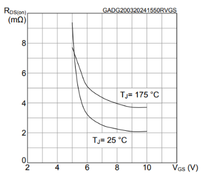
The last consideration is the gate charge QG. A smaller gate charge results in faster
switching and less switching loss
(heat generated during the transition from off to on and vice-versa). The gate charge at 8-10v
VGS and 20V VDD is about 25 nC which is very low for a mosfet of this
current rating.
This will allow us to get quick, sub 100ns switching speed on our
MOSFETs.
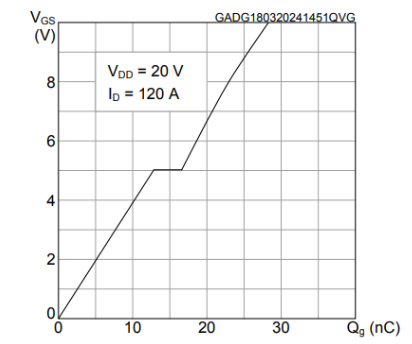
Gate Drivers
3-phase gate driver IC
For powering each of the brushless DC (BLDC) motors we will need to generate three phases. Each of these phases will need MOSFETs that connect to both a high (+Batt) and low (GND) power rail. In order to switch the MOSFETs efficiently, the gate voltage needs to be a certain voltage above the source. The microcontroller will only generate 3.3V signals which is not a large enough voltage to switch the MOSFETs efficiently. To generate these six amplified signals (one for each MOSFET) we will need to use a 3-phase gate driver IC. Our main considerations for our gate drivers are power dissipation, peak current sink/source, shoot-through prevention, bootstrap component choice, and operating voltage.
The gate driver supply voltage, GVDD should match the voltage we wish to drive the MOSFETs
at. From our MOSFETs design choice we need this to handle at least 8-10V. The high side gate still needs to be able to drive the MOSFET with
the high side connected to the load which can be as high as 16.8V. For this reason, the high-side
source pin voltage needs to be rated for at least 16.8V plus any transient spikes (see figure 3).
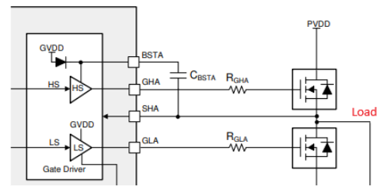
A high-side source voltage of 30V or higher will work. The logic input
voltage needs to support our MCU logic level of 3.3V and
the PWM frequency should support the fastest PWM frequency we plan to use for our 4S drone which is
48kHz. In general, the gate
driver supply voltage should be above the Undervoltage Lockout (UVLO) to prevent it from
turning itself off. For our design, the UVLO should not be
greater than the 8-10V gate driver voltage we choose from our voltage
regulator.
Next is gate driver power dissipation. This can be found from the equation PDrive = 2(QG × VDrive × fPWM).
The 2x comes from having to switch two MOSFETs. Our gate charge is about 25nC from MOSFETs and our VDrive is 8-10V and
our PWM speed is 24-48kHz. So the max power dissipation for our design
is:
PDrive = 2(25nC × 10V × 48,000Hz) = 0.026W.
This is very small and most gate drivers will be able to handle this.
In order to reduce switching losses, the switching time should be less than 100ns. If we aim for 50ns then Ipeak = 28nC / 50ns = 0.56A. The peak current source
capabilities of the gate driver we choose should be able to satisfy this 560mA.
The bootstrap circuitry will require a bootstrap diode to allow the bootstrap capacitor to charge up when the low side MOSFET is conducting. Some gate drivers have this built into them. It is better for our case if the bootstrap diode is built in since this will reduce manufacturing complexity, BOM size, and routing space requirements.
The gate driver, DRV8300UDRGER, is a perfect candidate for many
reasons. First, it has built-in bootstrap diodes so we don't need to find those separately. Second,
the peak source current is 0.75A and 1.5A sink current which satisfies our 0.56A design choice. Next, the voltage rating is 100V which greatly exceeds
the battery voltage and any transient spikes. The gate driver voltage also supports 8-20V which fits our requirement. Logic level high is 2.0V which supports
our 3.3V logic.
The maximum PWM frequency is 200kHz which satisfies the 48kHz constraint.
This IC also has 200ns of
dead-time (this is much less than the software dead-time built into AM32 at 830ns) and built-in
cross conduction prevention to
prevent both the high and low MOSFETs from conducting simultaneously, shorting the
battery to ground and burning up the board.
Bootstrap capacitor
We need to calculate the bootstrap capacitor needed for our MOSFETs from the formula given in our gate driver datasheet.
CBST_MIN = QTOT / ΔVBSTX
The following formula will help us solve for this.
QTOT = QG + ( ILBS_TRAN / fSW) = 25nC + ( 220µA / 48kHz ) = 25nC + 4.58nC = 29.58nC
where:
- QG is the total MOSFET gate charge
- ILBS_TRAN is the bootstrap pin leakage current
- fSW is the PWM frequency
Also from the datasheet, "any of commercial, industrial, and automotive applications use ripple value between 0.5 V to 1 V" and should be minimized as much as possible.
If we assume a ΔVBSTX of 0.5V we get CBST_MIN = 29.58nC / 0.5V ≈ 60nF. For our case we should
use 100nF as
60nF is the minimum CBST. Lastly, the GCDD capacitor needs to be at least 10
times larger than CBST. For this we should choose a 1uF
CGVDD capacitor. Both of these capacitors should be rated for at
least twice the voltage they are exposed to, as much of the
capacitance is lost due to capacitor DC voltage derating.
MOSFET series resistors
Without a series resistor, the gate capacitance along with the PCB trace inductance will form an LC
circuit which has the potential for
ringing. We can add a series resistor before the gate input to reduce this ringing. It also serves
to reduce the current output of the gate driver so
it isn't outputting at its maximum. Current can be found by Ohm's law V = IR or:
I = VDrive / (RDRV + RG + REXT)
With:
- RDRV = Gate driver internal resistance = 10Ω
- RG = MOSFET internal resistance ≈ 5Ω
- REXT = External series resistor. For now we choose 10Ω
I = 8 to 10V / (10 + 5 + 10) = 0.32A to 0.40A
This current is safely below the 0.75A peak current but will change our
switching time slightly so lets calculate that again.
tswitch = 28nC / 0.4A = 70ns
This is still less than the desired 100ns switching speed.
MOSFET pull down resistor
During transients, it is theoretically possible for a gate to charge up to a high enough voltage that the MOSFET starts conducting. If this happens to both the high and low side MOSFETs at the same time, the battery will short to ground. To prevent this we can add a pull down resistor between the gate and source of the low side mosfet. At 10kΩ, the resistor divider formed by the new resistor will barely affect the voltage seen at the MOSFET gate. The 10kΩ resistor will still bleed off stray charge quickly.
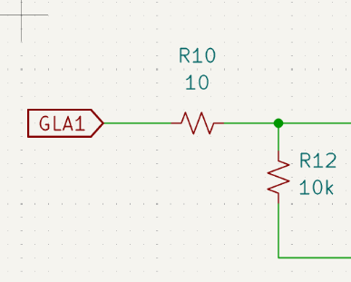
Power Regulation
Gate driver voltage regulation
Our gate drivers step up our microcontroller PWM signals to a high enough gate voltage to ensure the MOSFETs function in the saturation region so as to reduce the drain to source resistance as much as possible thus reducing power lost to heat. We need to generate this voltage to give to the gate drivers by regulating down the battery voltage. We do this instead of using battery voltage since the battery voltage is highly variable and changes significantly over the course of a flight.
Voltage regulator IC
Our gate drivers require a clean voltage below its maximum rating but still above its UVLO voltage.
The gate driver we chose in 3-phase gate driver IC requires a
voltage supply of at least 8V to avoid UVLO. To prevent blackouts, we
should choose a 10V supply to provide a decent safety margin. This voltage is also well below the
20V maximum voltage the gate driver can take and the worst case battery
voltage of 12V.
For compatibility with a future video transmitter (VTX), we would like to reuse the output voltage we
generate for the gate driver IC. This means a high output current (greater than 1A) is desirable.
The input voltage must be able to handle 12 - 17V from the battery. Given
the high current demand, a switching regulator should be chosen over a linear regulator since they
are much more efficient when regulating a large voltage change (i.e. 16.8V down to 10V). With these
considerations the AP63201WU-7 will work very well. The input
voltage of 3.8 - 32V and the variable output voltage from 1.2 - 12V fit
perfectly with our requirements. Additionally, the output current is rated for 2A.
External component network
In order to get the voltage regulator to function correctly, specific requirements need to be met
from the external component network. The first choice is the inductor value and rating. The
datasheet gives the equation, L =( Vout(VIN - VOUT) )/ (VIN × ΔIL × fsw).
When plugging in these values, the inductor value should be around 7-10µH, higher value being more efficient at low loads. A 10µH inductor was
chosen for these reasons. Another consideration for the inductor is the max current rating. From the
datasheet, the max current rating of the inductor should be at least 35% higher than the maximum
load current of 2A. Lastly, the DC resistance should be less than 100mΩ.
Second, care needs to be taken when choosing an input capacitor. To start, this capacitor will be connected to the main battery voltage which can spike
up to 30V in worst case transient situations. The voltage rating of this capacitor should
be either 35V or 50V. The capacitor should be a low ESR ceramic capacitor
of at least 10µF as per the datasheet.
Next, to set the output voltage to 10V, the resistor divider network needs to be set according to
this formula R1 = R2(Vout / 0.8V - 1). We chose
10kΩ and 115kΩ for these resistor values. Finally, the remaining components were taken
from the recommended component tables found in the datasheet. The board layout for these components
was done using Figure 5 as a reference.
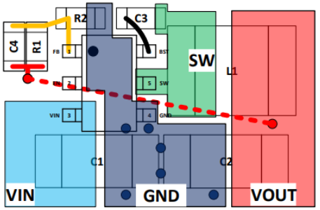
Logic-level voltage regulation (3.3V)
Our microcontrollers require a steady clean 3.3V power source in order to function correctly. The two options here are a linear regulator such as a low drop-out (LDO) regulator or a switching regulator like the one used for the gate driver voltage regulator. Given the relatively low current demand of our 3.3V microcontrollers (and any current sensing ICs) and the desire for a clean (low voltage ripple) voltage source, a linear regulator is chosen.
The important design considerations for the 3.3V regulator are the input voltage and the power
handling. The input voltage should be able to support the 10V from the
previous voltage regulator. Since the design uses a linear regulator, the efficiency is dependent on
the difference in supply voltage and output voltage. The power lost follows the formula P = (Vin - Vout) × Iout.
The majority of current will be drawn from the STM32G071KBU6 microcontrollers. Any other sensors used will need to be accounted for as well.
The STM32G071KBU6 datasheet lets us know that the total injected current (sum of all I/Os and control
pins) is 25 mA. We have two of these microcontrollers on one board which totals 50 mA. Adding a
layer of safety, the 3.3V regulator should be able to source about 100 mA
(this will also account for all miscellaneous components). From the equation, P = (Vin - Vout) × Iout we can find
the power requirement to be:
P = (10V - 3.3V) × 0.1A = 0.63W
This wattage is manageably low and many different packages would work to support this power dissipation. An SOT-89 package or larger will be sufficient in our case.
For our design, the AZ1117CH-3.3TRG1 was chosen. The voltage input
supports up to 15V which satisfies our 10V constraint. This regulator
uses the SOT-223 package with a tiny 15 °C/W thermal resistance. This is plenty for our design and
will never face temperature issues. The main drawback of this package is the large footprint size.
For our design, we chose to put easily hand solderable components onto the backside of the board since we will only use the reflow oven and a stencil for the top layer. This results in our design having a lot of extra space on the back for hand solderable components. This larger SOT-223 package is actually an advantage in our case as the larger package is easier to hand solder.
Transient suppression
In order to protect our components, we need to minimize transient voltage spikes. Our transient suppression solution is composed of two parts, a transient voltage suppression (TVS) diode, and input filtering capacitors.
TVS diode
The TVS diode will be able to clamp the high voltage spikes caused by back emf from our motors. The clamp voltage must be less than the maximum voltage rating of all of our components.
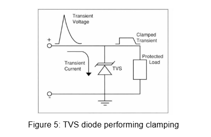
There are two components on the ESC board that need to be considered. The first are the MOSFETS. From
the datasheet, the STL165N4F8AG we designed for are rated for a maximum drain to source voltage of
40V. The second component is the gate driver voltage regulator. From the
datasheet, the AP63201WU-7 voltage regulator is rated for 35V on the VEN
which is tied to the battery.
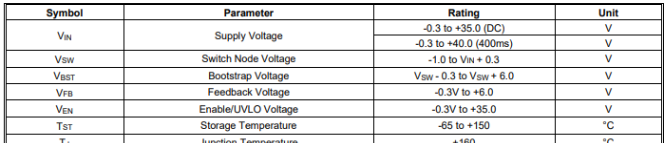
From these voltage limits we should choose a TVS diode with a clamping voltage less than 35V. This clamping voltage represents the maximum voltage before the diode
starts fully conducting.
Input capacitors
The input capacitors offer two main functions, to smooth out the voltage from starting and stopping the motors quickly and to provide voltage the instant that the MOSFETs are switched. This is done in two phases, a bulk electrolytic capacitor and many small ceramic capacitors respectively.
First, the bulk electrolytic capacitor will act as a tank that will fill and drain as the motors are
rapidly ramped up and down. This acts to smooth out any large voltage spikes from the motors. A
through-hole, 470µF-1000µF, low-ESR electrolytic capacitor should be
soldered onto the battery pads.
Second, low-ESR ceramic capacitors should be used at each high MOSFET drain connection. These
capacitors will supply voltage to the MOSFETs in the short period of time right after the MOSFET is
switched on to prevent the voltage from sagging at the drain. Importantly,
ceramic capacitors will lose a large percentage of their capacitance when subjected to a DC
voltage called DC bias derating. To minimize this effect, a 35V-50V rated capacitor of X5R or X7R specification should be used. Even
with these higher voltage ratings, expecting only 40% of the rated capacitance is a solid safety
margin. For this design, two parallel 22µF capacitors were used at the drain pins of each high
MOSFET. Using parallel capacitors mathematically halves the equivalent series inductance (ESL),
preventing the self-resonant frequency (SRF) from falling too low which is something larger
capacitors can struggle with.
Sensing & Feedback
In order to properly spin each motor in phase, each electronic speed controller circuit will need some form of back-emf detection. Additionally, other sensing can be added to the board for relaying useful information about the drone such as current usage and battery voltage.
Back-EMF detection
In 6-step commutation, only two of the three phases are driven at a time and the third one is left floating. As the permanent magnets of the rotor spin past the stator wires, a voltage is generated according to Faraday's law. This voltage is called the back electromotive force or back-emf. As the magnet passes the coil of wire the back-emf voltage will swing from positive to negative. The point where this happens is called the zero-crossing point (ZCP). At the ZCP, the microcontroller knows exactly where the motor is in its rotation and can align the motor to spin at the desired speed.
To read this ZCP, we will compare the phase (A, B, or C) with a common/neutral node, analogous to a star configured 3-phase AC design. In our design, we chose to use the comparator functionality on the STM32G07 microcontroller as these pins worked well for our layout and simplified calculations. An alternative to using comparators is to use analog to digital converter (ADC) pins and find the difference in software. Critically, the voltage measured at the floating phase can swing up to battery voltage (16.8V or more with transient spikes) which would fry the microcontroller input/output (IO). To remedy this, a resistor voltage divider network is set up for each phase. Figure 8 shows the schematic of the back-emf detection circuit.
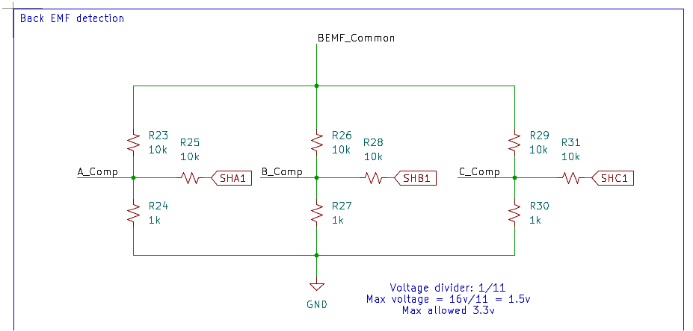
Current sensing
A useful sensing option is knowing what the current draw of the motors are at any given time. This can be useful for estimating things such as battery life. Specifically on this board, we designed around per motor current sensing so that the current draw could be sensed on each motor separately. This has the potential advantage of being able to tell if one motor is drawing more current than the others for some reason. This could help detect if a motor is failing and if all currents are combined it provides the same functionality as a full board current sensor. For our design, there are two important components to choose, the current sensing IC and the shunt resistor.
First is the shunt resistor. The maximum current per motor that is being designed around is 50A. The shunt resistor needs to be able to handle
this current without burning. From the equation, P = I²R
it can be found that 2500 times the resistance is the desired power rating. With a 1mΩ shunt
resistor the maximum power dissipation required is 2.5W. For our design, we went with a 1mΩ 3W resistor.
The second is the current sensing IC itself. The existing ESC firmware AM32 which this board is
designed to be compatible with has existing code to read current data from an ADC input. There exist
current sensing ICs that communicate over I2C which could be used but won't necessarily be supported
by AM32. For this reason we have chosen a current sensing IC that outputs an analog voltage. This
analog voltage output needs to be between 0-3.3V for the ADC pin on the
STM32G07. Since the shunt resistor chosen is 1mΩ and the current ranges from 0-50A, the
maximum voltage drop across the resistor is 50mV. Therefore, the gain of our current sensor should
not be more than 66. The INA180A2IDBVR by Texas Instruments offers
a gain of 50 V/V, generating an output voltage in the range of 0-2.5V which works well with our
design. It supports an input common mode voltage up to +26V which works
for our battery voltage, and works with our 3.3V logic voltage.
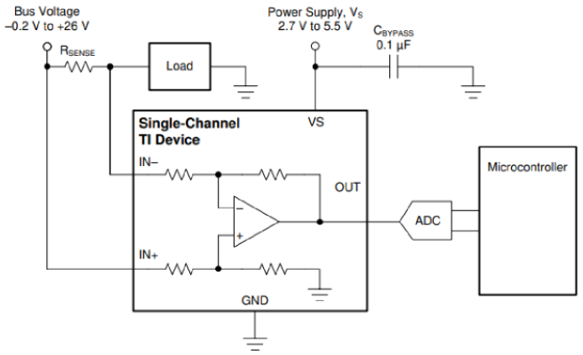
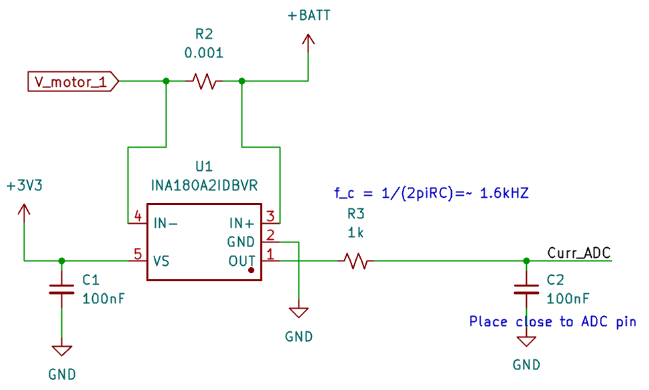
Voltage sensing
The voltage sensing solution is very simple. Connecting an ADC pin on the STM32G07 to a voltage
divider and multiplying the value by the inverse of the voltage divider ratio. This is done because
the microcontroller cannot support voltages like the ones our battery supply is at. A simple 1/11
voltage divider reduces our 16.8V battery voltage to 1.52V, well beneath the 3.3V rating of the microcontroller IO pins.
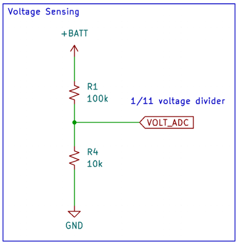
PCB Layout & Thermal Management
The layout of the PCB is as important as the schematic designs themselves. An ESC layout is different from a standard PCB because of the high currents and power dissipation of the board. Many design choices were made to minimize the effects of high current and heat generation. This section will detail the considerations made during board layout.
2oz copper thickness
The electrical resistance of a PCB trace is inversely proportional to its cross sectional area. The
standard copper weight is 1oz (roughly 35 µm thick). By increasing the weight of the copper to
2oz, we effectively half the resistance. Since P = I²R, this halving in resistance also halves the power lost to heat
by the traces. For our design, 2oz copper was used for the internal and external layers of our
4-layer board design. An added benefit of the thicker copper layer is the increased thermal
conductivity which is also related to the cross sectional area of the copper. Increased thermal
conductivity acts to spread out the heat generated to cooler areas of the board and where it can be
transferred into the environment through conduction.
Large copper pours & thermal via stitching
This section is currently in development
Avoiding thermal reliefs
This section is currently in development
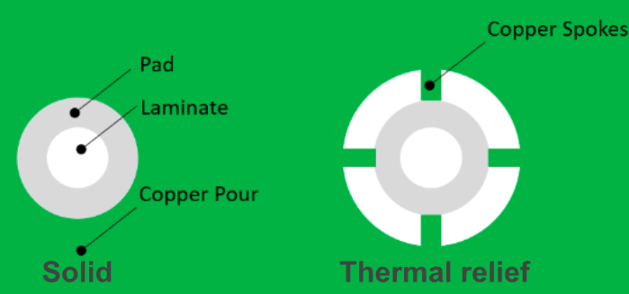
Summary
This section is currently in development
Definitions
This section is currently in development